| Book Name | Photo | Review |
|---|---|---|
| Hidden Energy | 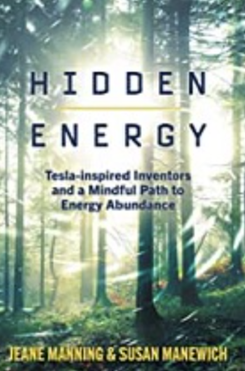 | This overview of the "free energy" scene by Jeane Manning and her new co-author, Susan Manewich, has high and low points. For anyone expecting hard data about how to build an over-unity device, it will be a disappointment, but it does cover a few interesting topics. |
| Healing is Believing | Dr Mills is a physician, veterinarian, and Reike master teacher. This is her second book, and it consists of 16 vignettes how she has used reiki to heal people and animals, and also some glimpse into how the nurses and doctors in the hospitals she has practiced in have reacted to her work | |
| Evidence of Eternity | 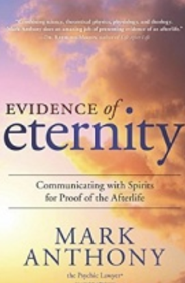 | Communicating with the Spirits for Proof of the Afterlife is an entertaining account of many of Anthony's psychic experiences and client readings that are offered as evidence of spirit communication. Mark Anthony, who has registered the name the Psychic Lawyer, is a self-professed fourth generation medium who earned his law degree from Mercer University in Georgia. Anthony's mother, aunt and father all had psychic abilities and he inherited those abilities from them. Anthony studied mediumship at the Arthur Findlay College for the Advancement of Psychic Science in Essex, England. |
| On the Edge of Reality | 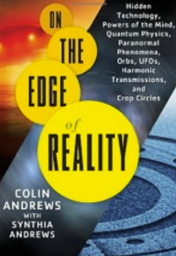 | Both Colin Andrews and his wife Synthia have been leading some of the most interesting work in the area of edge phenomena. When we come across events we don't understand, we tend to look for authority figures to help us put it in context. For some , Colin Andrews is one of those authority figures. By working with his wife, Synthia, who does personal therapy treatments using energy modalities, this book brings in a balance of research and experiential insight. |
| Magicians of the Gods | 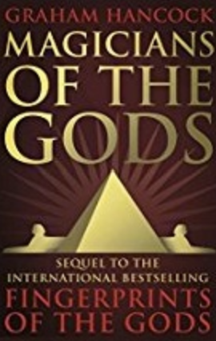 | Magicians of the Gods starts on a high note, with an impressive chapter about Gobelki Tepe, in Turkey, where Mr. Hancock convincingly demonstrates the immense age of the site, and the presence there of astronomical alignments which indicate a concern for the time period we are currently living in. A later chapter describes his travels to the scablands of Washington State (the name perhaps derived from the non-union labor used by geologists in their excavations), where he makes clear the impressive evidence for flooding on a far larger scale than "uniformitarian" history will allow. He later describes travels to Egypt, South America, Easter Island and other places, all to provide evidence of an advanced ancestor civilization, which seems to have left indicators of a perhaps impending cataclysm. |
| Magic Steampuck | 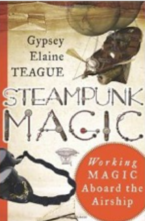 | Working Magic Aboard the Airship by Gypsey Elaine Teague is a guide to a new and inventive magical system developed using the icons, symbols, style and stories of the Steampunk movement. The book discusses the origins and basis for Steampunk Culture and then dives into to describing the magical system and group formation and administration. The ritual tools, altar items and attire are described including different ways of manufacturing or procuring your own. |
| Calico Horses and the Patchwork Trail |

|
Calico Horses and the Patchwork Trail by Lorraine Turner is a coming of age tale about the interaction between a group of ten year old girls, their families and the natural kinship of human and animal. A very balanced look at the struggle of the wild mustangs of the Calico Mountains is presented. Through learning about the horses the girls learn about themselves and their shared journey. There is a definite spiritual thread that runs throughout the work. |
| The anatomy of Conciousness | 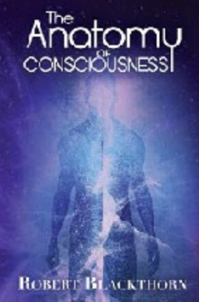 | The Anatomy of Consciousness is described as an innovative take on numerology combined with the use of astrological archetypes. This work is part one in a series called the Govian Chronicles. In the introduction the author describes his personal system of spiritual evolution through nine archetypes: the vanguard (1), the empath (2), the innovator (3), the messenger (4), the conjurer (5), the adept (6), the sage (7), the monarch (8), and the shepherd (9). Robert Blackthorne has created his own personal mythos, his hero�s journey, through these archetypes or stages of soul development. This development, it is argued, reaches across lifetimes, dimensions and other worlds. Blackthorne contends that this system for consciousness development was encoded in him from another lifetime and this book is the first part of the message he discovered. |
| The Fourth Phase of Water | 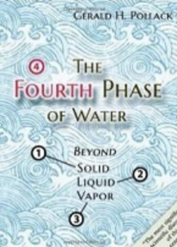 | This is a fascinating book about water by a Professor of Bioengineering at the University of Washington. Water is considered a rather mundane and well-understood subject, but it may be far more mysterious than is commonly believed. The author has done properly conducted experiments showing the existence of what he calls an "exclusion zone" which forms in water when it interfaces with air or other substances. This amounts to a fourth phase of water, in addition to liquid, solid and gas. He theorizes that the cause of this effect is similar to crystallization in a solid material. |
| The Electric Universe | 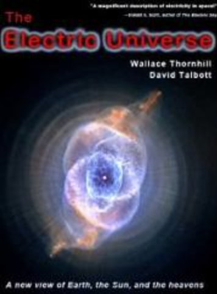 | This is an interesting overview of the controversial "electric universe" theory by two of its leading proponents, scientist Wallace "Walt" Thornhill and writer and mythologist David Talbott. The standard model sees gravitation and the associated nuclear reactions as the sole forces responsible for the development and structure of the universe. The electric universe, as the name implies, allows a much larger role for electrical forces. This is important because electric fields, and their associated magnetic fields, are strong enough for a given mass and distance to account for what astronomers are seeing. By contrast, the weakness of gravity over galactic distances requires the existence of "dark matter" and other invisible entities to fit the observational data. |
| Shop Class as Soulcraft | Unfortunately, I got totally bogged down on his theorizing about modern corporate work settings. Too much of the book is based
on the abstractions of abstractionists, and misses the core problem of class division. Without a class analysis of the corporate world, the conundrums he posits do not make sense. He talks about the dysfunctional attitudes that a certain segment of our society has toward hands-on work. It is an attitude that tends to degrade the skills of manipulating the material world. I cannot resist pointing out that there are a large number of people who do not share his disdain for skilled mechanics, but to make my point, the author does not seem to be aware that those people exist - they are not the part of society that matters to him, therefore, they can be ignored. |
|
| The Akashic Experience | 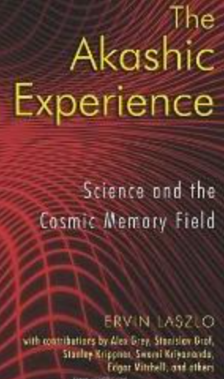 | A two time Nobel Peace Prize nominee, systems theorist, founder of the think tanks Club of Budapest and General Evolution Research Group, and author of 83 books, Ervin Lazlo is a force of consciousness shifting and positive inertia for mankind. The Akashic Experience is a book written for a world community that experiences a spiritual famine due to a dominant paradigm of scientific materialism that provokes and promulgates doubting of the soul, denial of spirit, and a refusal of the possibility that mind creates matters as it moves and consciousness manifests the reality we experience. |
| Human Race get off your Knees | Human Race Get Off Your Knees reads like a compendium of Icke's earlier material. The subject matter is esoteric and metaphysical, but its style is conversational and unpretentious - though equally verbose and often repetitious. At 645 pages, topics range from political and economic conspiracy theories to physics to space and extraterrestrials (ETs), to the nature of reality. An ambitious scope, but David Icke is an ambitious man. One gets the feeling that if Icke hadn't a deadline he'd have turned Human Race into an encyclopedia! Indeed, finding a topic on which he doesn't have an opinion becomes difficult as the reader journeys down "through the Rabbit Hole", to borrow a trademark phrase from his lectures. | |
| Everything Happens for a Reason | 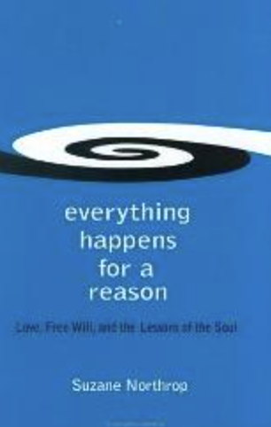 | In Everything Happens for a Reason, Northrop shoots right from the hip and heart about her experience as a trance medium and her clients ’ reactions/ benefits from the work she does for them and for spirit. Despite the book’s seemingly general title – this is mostly a book about Mediumship and grief. |
| The Science Of Getting Rich | 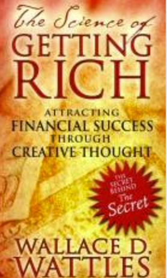 | In other words, the starving kids in Iraq or the Sudan are that way because they are thinking the wrong thoughts!? And we rich Americans, who have heat, light, and running water at the flip of a switch have it because our thoughts are so much better than Those People Over There, who are living in hovels? It’s a common aphorism in New Age circles, and I understand how comforting it can be to the affluent, but I always have to reserve judgment when I hear someone start like that. |
| Temples on the Other Side | I want to start by saying I don�t buy into Sylvia�s self founded religion of the Society of Novus Spiritus. I don�t necessarily even know if Sylvia Browne is in fact a real medium, channel or psychic. However, putting all that aside I really liked this book for purely entertainment reasons. I spent quite an enjoyable day lying on the lawn in my backyard reading this book in the warm Seattle sun while sipping coffee. One doesn�t necessarily have to take the book as the way the truth on the other side has to be to enjoy this book. The book has heavy reincarnation assumptions. | |
| The Other Side and Back | I felt this book helped me understand some of the people I know who are Sylvia-ittes as I call them. This book coming before the two news I just read helped me understand better some of her concepts such as our life Blue Prints and dark entities. This book helped me understand why I would never join Sylvia�s �religion� beyond just the odd tummy feel I get about it. This book I think more openly exposes some of Sylvia�s beliefs better than her newer books. |
New Reviews!
New reviews will be coming out shortly!
If you have a specific book you would like to review please contact us!